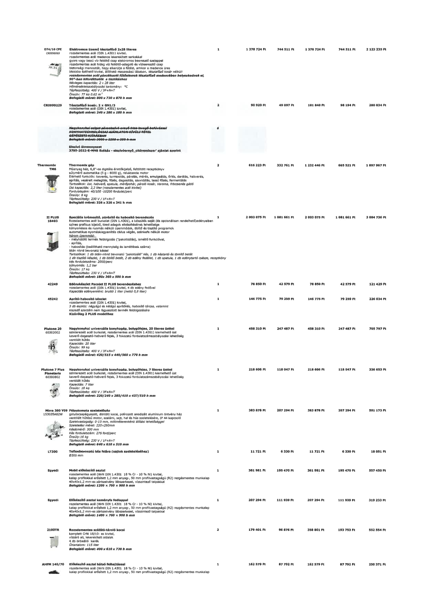

| Tétel | Menny. | Egys. | Anyag e.ár (net HUF) | Díj e.ár (net HUF) | Anyag összesen (net HUF) | Díj összesen (net HUF) | Anyag+Díj összesen (net HUF) |
|---|---|---|---|---|---|---|---|
| D74/10 CPE CR0990069 Elektromos üzemű tésztafőző 2x28 literes | 1 | NaN | 1 378 724 | 744 511 | 1 378 724 | 744 511 | 2 123 235 |
| CR0999229 Tésztafőző kosár, 2 x GN1/3 | 2 | NaN | 90 920 | 49 097 | 181 840 | 98 194 | 280 034 |
| Thermomix TM6 Thermomix gép | 2 | NaN | 616 223 | 332 761 | 1 232 446 | 665 521 | 1 897 967 |
| II PLUS 18403 Speciális krémesítő, pürésítő és habosító berendezés | 1 | NaN | 2 003 075 | 1 081 661 | 2 003 075 | 1 081 661 | 3 084 736 |
| 42249 Edénykészlet Pacoiet II PLUS berendezéshez | 1 | NaN | 78 850 | 42 579 | 78 850 | 42 579 | 121 429 |
| 45242 Aprító-habosító készlet | 1 | NaN | 146 775 | 79 259 | 146 775 | 79 259 | 226 034 |
| Plutone 20 60302002 Nagykonyhai univerzális konyhagép, bolygófejes, 20 literes üsttel | 1 | NaN | 458 310 | 247 487 | 458 310 | 247 487 | 705 797 |
| Plutone 7 Plus Planetaria 60300802 Nagykonyhai univerzális konyhagép, bolygófejes, 7 literes üsttel | 1 | NaN | 218 606 | 118 047 | 218 606 | 118 047 | 336 653 |
| Mirra 300 Y09 153035A02W Félautomata szeletelőgép | 1 | NaN | 383 878 | 207 294 | 383 878 | 207 294 | 591 173 |
| LT300 Teflonbevonatú kés felára (sajtok szeleteléséhez) | 1 | NaN | 11 721 | 6 330 | 11 721 | 6 330 | 18 051 |
| Egyedi Mobil előkészítő asztal | 1 | NaN | 361 981 | 195 470 | 361 981 | 195 470 | 557 450 |
| Egyedi Előkészítő asztal keményfa fedlappal | 1 | NaN | 207 294 | 111 939 | 207 294 | 111 939 | 319 233 |
| 2100TR Rozsdamentes szállító-tároló kocsi | 2 | NaN | 179 401 | 96 876 | 358 801 | 193 753 | 552 554 |
| AHFM 140/70 Előkészítő asztal hátsó felhajtással | 1 | NaN | 162 579 | 87 792 | 162 579 | 87 792 | 250 371 |
